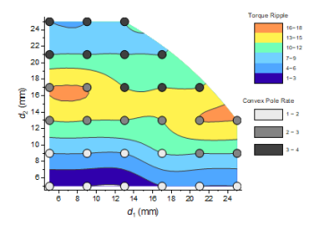

Kontur - Kategorial Z
Contour-Categorical
- 
Datenanforderungen
-
- Wählen Sie mindestens eine Z-Spalte aus (oder einen Bereich aus mindestens einer Z-Spalte). Falls die Z-Spalte verbundene XY-Spalten besitzt, werden die XY-Spalten verwendet; ansonsten werden die XY-Standardwerte des Arbeitsblatts verwendet.
-
oder
Diagramm erstellen
- Aktivieren Sie das Matrixblatt oder wählen Sie die gewünschten Daten im Arbeitsblatt aus.
- Wählen Sie im Menü .
Weitere Einzelheiten zum Erstellen und benutzerdefiniertem Anpassen von Konturen mit Farbfüllung finden Sie im Kapitel 3D- und Konturdiagramme.
Vorlage
TRICONTOUR_CATEGORICAL.OTPU
Hinweise